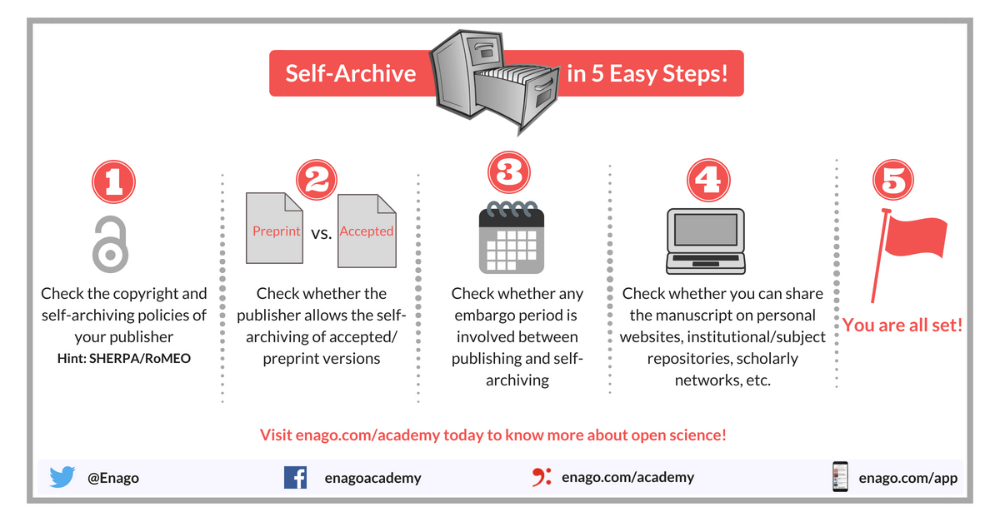

運用公開預印本實現自我典藏
過去三年裡，透過與他人合作還有自已主導的計畫，已經累積五篇已經發表或正在進行的論文，以預印本(Preprint)模式於出版前公開1。除了Justify your alpha與心理科學加速器成立倡議，其他三篇都是送期刊評審的註冊報告計畫。除了在英文twitter或國外研討會與國外學者有做為討論材料，在中文網路社群與國內學者的交流場合，幾乎沒有人在意。這一年因上課以及與國外學者交流的經驗，讓我察覺台灣學術圈普遍缺乏對預印本的正確認識，更關鍵的問題是自我典藏(self-archiving)的觀念與操作方式，尚未被學術機構及主管機關重視，也未有資深學者主動提倡。這篇貼文藉由分享個人經驗，自不量力地鼓勵更多先進認識以公開預印本實現自我典藏的方式。
自我典藏與開放取用
開科社會基金會(Open Society Foundations)於2001跨2002年間在布達佩斯舉行16人小組會議，總結布達佩斯公開取用倡議(the Budapest Open Access Initiative)2。其中提出兩項影響之後Open Access推廣行動的策略：第一是鼓勵學者自行運用公開的數位資料庫，典藏個人發表於期刊與書籍的論文。第二是學術機構及政府機關應鼓勵並引導開放取用期刊的發展，讓學者至少以合理費用公開發表於期刊的著作。
布達佩斯公開取用倡議發表之前，已有知名的預印本平台arXiv，有數學及物理等基礎學科的學者，於此平台發佈尚未進行學術評審的著作草稿。社會科學領域的預印本平台在開放科學中心(Center for Open Science)與心理科學促進學會(Society for the Improvement of Psychological Science)合作，以OSF preprints為基礎，架構PsyArxiv。我的五篇預印本皆透過PsyArxiv發佈，也是全球心理學者發表預印本的主要平台。
由於多數有高影響力的傳統學術期刊由商業出版社經營，為了維持版權收益，高影響力期刊約束學者不得將須付費取得的後印本(post-print)逕行上傳至預印本平台。所以有發佈預印本的學者會將預印本網址置入個人履歷，加上google scholar從2017年起就自動將PsyArxiv資料納入學者著作紀錄，更方便整理個人履歷。
什麼是預印本？
與學術出版有關的中文資訊網站，可查到符合布達佩斯公開取用倡議，有關預印本的解釋。以下引述三種來源說法：
- 維基百科:
預印本（Preprint）也稱未定稿本。在學術出版領域，預印本是指尚未在需要同行評審的科學期刊上出版的科學文獻的草稿。 作者在寫作完成後，可能在出版之前將草稿預先公開讓大家閱讀並提出更改建議，並在稍後提交學術期刊進行出版。學術期刊一般會讓選定的業內人士對投稿的文章做同行評審後才發表，但是某些雜誌機構也會將未經專家評審的未定稿本發表在該雜誌／機構的網站上。
學術著作預印本（preprint）是指將尚未經過同儕審評、正式出版之前的初稿儲存並公開在預印本典藏庫（repository）上…
預印本（Preprints）可以是學者學術論文的草稿、或是已投稿刊物但仍在審稿階段或已被接受但仍需修稿的稿件，也可以是刊物確定刊出但非正式刊出版面格式的內容…。學者可以選擇與其學科性質相符的預印本資料庫來上傳公開與典藏內容，…
相對於上述中文網站，擁有最多台灣學術機構發行的中文學術期刊平台 ─ 華藝線上圖書館，在首頁張貼的預印本定義，是與上述說法相背的過時解釋。以下是節取自首頁的英文說明：
A journal article that has undergone peer-review and has been accepted for publication but not yet formally published.
公開預印本的作用
論文手稿經由預印本平台公開，就能達成所謂的綠色OA。由於不是所有期刊都支持這種發佈方式，發佈前最好先在SHERPA/RoMEO查詢刊登著作的期刊，是否支持學者將預印本或後印本發佈在公開平台。
通過近年心理科學界推動的註冊報告3，通過任何期刊第一階段評審的計畫手稿，經過預印本平台發佈能提早讓世人得知正在進行的研究計劃。如果這些計劃是多方合作的大型計畫，也可吸引有興趣的研究者加入合作。而且預印本平台保存研究過程各階段的手稿，可讓眾人檢視研究初期至結束的異同，確保著作品質的真實性。
OSF preprints預印本平台系列已整合線上評注系統hypothes.is，平台讀者可透過評注系統，在閱讀的預印本某處留下個人的公開或私密註解。評注功能不但促成發表後同儕評審(post-published peer review)，也能在各種場域運用論文內容進行討論或學習。雖然目前只支授chrome瀏覽器，未來的發展值得期待。
如何發佈預印本
發佈預印本基本步驟如下圖4，關鍵在於找到適合發佈的平台。

對中國大陸的學者來說，2016年起中國科學院建置的ChinaXiv正式上線，讓想發佈預印本的學者有了園地。隨後採用相同框架的專業領域預印本平台也陸續上線，像是心理科學的PsyChinaXiv。ChinaXiv和OSF Preprints不同的是，前者由國家最高級研究機構建置，後者由非盈利組織 經營。還有OSF Preprints的源始碼完整公開於github，提供有需要的人士，架構服務專業領域或區域性學術社群的預印本平台。至於ChinaXiv有無公開源始碼尚需進一步查證。
在台灣推動自我典藏的困難與對策
對照中國大陸積極建置符合國內學術發展需要的預印本平台，並鼓勵學者使用，就能看出在台灣推動自我典藏的兩層困境。首先是各領域學者缺乏在投稿前發佈預印本的習慣意識，除非是向提供開放審查(Open peer review)的期刊投稿，例如PeerJ，才會使用期刊提供的預印本平台發佈。另外，學術主管機關及各大學機構沒有認為推動開放取用有其必要性，無法形成有利的環境條件。
培養台灣各領域學者養成自主發佈預印本的習慣，我認為可以有兩個對策。其一是運用OSF Preprints架構，建構提供台灣各領域學者發佈中文或英文論文的預印本平台。這方面已有法國的FrenXiv、阿拉伯世界的Arabixv、印尼的INA-Rxiv、與印度的indiaRxiv。這些平台主要依賴區域內圖書資訊相關機構定期補助經費，即可提供該國或該地區免費發佈預印本的服務。
學術主管機關及各機構或因現在的人員續效評鑑制度，缺乏鼓勵機構內學者的誘因。其實稍微調整評鑑方向，配合預印本平台的基礎建設，不只可以提昇意願，還能提昇台灣整體學術產出的誠信度。我建議與其要求學者每年必須生產幾篇論文，不如鼓勵學者持續將有出版價值著作手稿發佈到預印本平台，透過OSF Preprints發展中的同儕評注機制，定期檢視著作收到同儕建議及著作內容更新狀況，做為評估學者研究續效的資料。對於運作評鑑制度的機構單位及接受評鑑的學者，都可以省下冗長又無法評斷指標優劣的文書作業，也可以提供第三方資訊產業人員發揮的機會。能否創造多贏格局，希望這篇網誌能激發一些想法與行動。
本文原刊於舊站，2026-10 自網站備份復原。